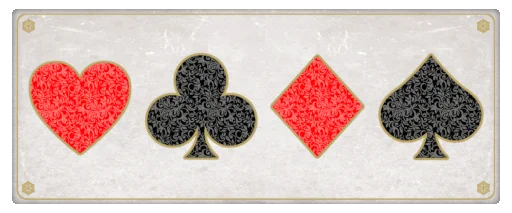

"Alice im Wunderland" enthält verborgene Kritik an der viktorianischen
Gesellschaft, Satiren auf zeitgenössische Kindergedichte, Parodien und
vielschichtige Sprachspiele. Das Buch kann auch als Gegenentwurf zu den
rigiden Konventionen der Zeit interpretiert werden.
So wird Alice im Wunderland als Gegensatz zu den starren Konventionen und
Regeln der viktorianischen Ära aufgefasst, indem es eine Welt erschafft,
in der ein Kind ohne erzieherische Normen seinen Weg finden muss.
Lewis Carroll parodierte viele didaktische Kindergedichte seiner Zeit, um
eine humorvollere Erzählung zu schaffen. Es gibt sowohl starke christliche
Bezüge als auch Anklänge an das Heidentum.
Carroll verwendete eine Vielzahl von Sprachspielen und Wortwitzen, um die
Absurdität der Geschichte zu unterstreichen. Der flüssige Erzählstil war
für die Zeit ungewöhnlich und trug zur Dynamik und Kontinuität der
Handlung bei.
Eine Interpretation des Films von 2010 deutet auf eine feministische
Deutung des Buches hin. In dieser Interpretation ist Alice jedoch zu einer
selbstbewussten jungen Frau geworden, die ihren Weg unabhängig von
traditionellen Erwartungen geht.
Alice enthüllt durch ihre direkte Art die Egoismen und Absurditäten der
Erwachsenen, was zu einer Kritik an den moralischen Prinzipien der Zeit
führt.
Die Geschichte wird durch eine Bootsfahrt mit der Familie Liddell
initiiert und ist somit tief in der Kindheitserfahrung verwurzelt. Die
Erfahrung des Wunderlandes, in dem die Gesetze der Logik und Physik außer
Kraft gesetzt sind, kann als eine Erkundung der kindlichen
Vorstellungskraft und ihrer Fähigkeit, die Realität zu biegen und zu
formen, gesehen werden.
Es gibt eine Sehnsucht, einen Blick hinter die Oberfläche der Wahrnehmung
zu werfen und der kindlichen Neugier zu folgen.

Psychologische Interpretation
Die skurrile und oft absurde Natur des Wunderlandes spiegelt das Chaos und
die Unberechenbarkeit des Unterbewusstseins wider. Das Wunderland zwingt
Alice, sich mit ihren Überzeugungen und Ängsten auseinanderzusetzen. Viele
Charaktere können mit psychischen Störungen in Verbindung gebracht werden.
Darunter das weiße Kaninchen, das mit einer generalisierten Angststörung
in Zusammenhang gebracht wird. Die Fähigkeit der Grinsekatze zu
verschwinden und die Realität zu verzerren, wird als schizoide Eigenschaft
interpretiert.
Mögliche alternative Interpretationen
In der Popkultur wird die Geschichte oft als Metapher für einen Drogentrip
interpretiert, insbesondere durch Anspielungen in Musik und Filmen, so der
"Deutschlandfunk Kultur".
Obwohl das Buch viele verborgene Bedeutungen und Kritik enthält, sind
nicht alle Interpretationen zutreffend. Einige Theorien, die das Buch als
Allegorie auf Drogenkonsum oder Sexualität ansehen, sind umstritten.
Sinn und Sinnsuche
Eine tiefere Botschaft des Buches könnte es sein, dass die Welt oft
verrückt und sinnlos erscheint. Anstatt krampfhaft nach einem tieferen
Sinn zu suchen, schlägt die Geschichte vor, die Reise und die Erfahrungen
selbst zu genießen.